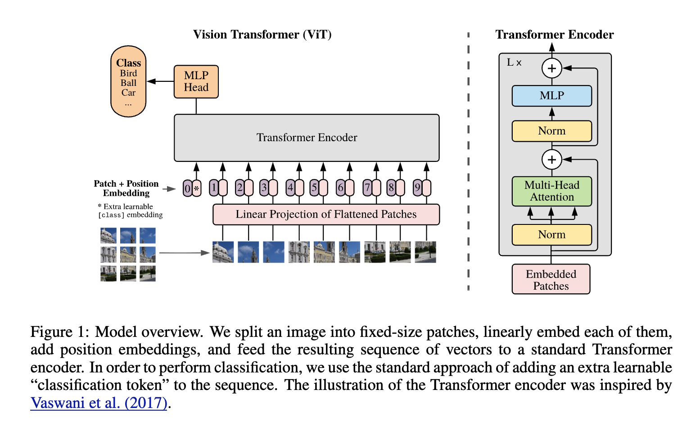

Vision Transformer (ViT)
The Vision Transformer (ViT) represents a massive paradigm shift in computer vision. Introduced by Google in 2020 ("An Image is Worth 16x16 Words"), it completely removes convolutional layers (CNNs) and applies a standard Natural Language Processing (NLP) Transformer directly to images.
The core philosophy of ViT is to treat an image exactly like a sentence, where the "words" (tokens) are simply small, flattened patches of the image.
Here is a breakdown of the architecture and the underlying tensor math, starting from the raw image input.

1. Patch Extraction and Flattening
Standard Transformers expect a 1D sequence of token embeddings as input, but an image is a 2D spatial grid. To bridge this, ViT splits the image into a grid of non-overlapping patches.
Given an input image \(x \in \mathbb{R}^{H \times W \times C}\) (Height, Width, Channels), we extract patches of size \(P \times P\). This creates a sequence of \(N\) flattened 2D patches \(x_p \in \mathbb{R}^{N \times (P^2 \cdot C)}\), where the sequence length \(N\) is calculated as:
\[N = \frac{HW}{P^2}\]
In a PyTorch workflow, moving from a standard batch tensor (B, C, H, W) to this sequence format (B, N, P*P*C) is essentially an intelligent reshape operation (often elegantly handled via einops.rearrange).
2. Linear Projection (Patch Embeddings)
Transformers maintain a constant latent vector size \(D\) through all their layers. To map our flattened patches \((P^2 \cdot C)\) to this dimension \(D\), we apply a trainable linear projection \(E\) (which is mathematically equivalent to a 2D convolution with a kernel size and stride equal to \(P\)).
\[x_p^i E \in \mathbb{R}^D\]
3. The Learnable [CLS] Token & Positional Embeddings
Before feeding the sequence into the Transformer encoder, two crucial elements are added:
- The Class Token (`[CLS]`): Similar to BERT in NLP, a learnable embedding \(x_{class}\) is prepended to the sequence of embedded patches. The state of this token at the output of the final Transformer layer will serve as the global image representation for classification.
- Positional Embeddings: Because Transformers process all tokens simultaneously (they have no inherent sense of sequence or spatial order), we must inject spatial awareness. Standard 1D learnable positional embeddings \(E_{pos}\) are added element-wise to the patch embeddings.
The final input sequence \(z_0\) entering the Transformer is:
\[z_0 = [x_{class}; x_p^1 E; x_p^2 E; ...; x_p^N E] + E_{pos}\]
4. The Transformer Encoder
The sequence passes through \(L\) identical Transformer blocks. Each block consists of two main components, utilizing Layer Normalization (LN) and residual connections:
- Multi-Head Self-Attention (MSA): Allows patches to look at every other patch in the image to build a global understanding context.
\[z'_l = \text{MSA}(\text{LN}(z_{l-1})) + z_{l-1}\]
- Multi-Layer Perceptron (MLP): A two-layer network with a GELU non-linearity applied to each token independently.
\[z_l = \text{MLP}(\text{LN}(z'_l)) + z'_l\]
5. The Classification Head
After \(L\) layers, we discard the patch tokens and extract only the first token of the final sequence \(z_L^0\) (the processed [CLS] token). We pass this vector through a Layer Norm and a final MLP head to get the class logits:
\[y = \text{MLP}(\text{LN}(z_L^0))\]
Why ViT Matters
- Global Receptive Field from Layer 1: Unlike CNNs, which slowly build up a global receptive field layer by layer, self-attention allows the very first layer of a ViT to integrate information from opposite corners of an image.
- Scaling: ViTs show incredible performance at massive scales, but they are famously data-hungry. Because they lack the inductive biases of CNNs (like translation invariance and locality), they require significantly more data (often pre-trained on datasets like JFT-300M) to figure out those visual rules on their own.
- Foundation for Generative AI: The sequential nature of ViT has made it highly adaptable. The architecture heavily influences modern generative setups, such as replacing the U-Net backbone in diffusion models with Transformer blocks (Diffusion Transformers, or DiT) to process latent patches.